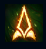
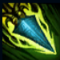
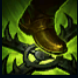
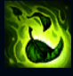
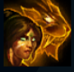

Nidalee
| Nidalee The Bestial Huntress | |
|---|---|
| Release date | 17.12.2009 |
| Class | Specialist |
| Positions | Jungle |
| Resource | Mana |
| Range type | Ranged |
| Adaptive type | Magic |
| Base statistics | |||
| Health | 545 – 1990 | Mana | 295 – 1060 |
| Health regen. | 6 – 16.2 |
Mana regen. | 6 – 19.6 |
| Armor | 28 – 87.5 | Attack damage | 58 – 117.5 |
| Magic resist. | 30 – 38.5 | Crit. damage | 175% |
| Move. speed | 335 | Attack range | 525 |
Nidalee a crescut în inima junglei și a ajuns un vânător deosebit de iscusit, care se poate transforma pe dată într-o pumă feroce. Nu este pe de-a-ntregul nici femeie, nici bestie și își apără violent teritoriul de toți cei care îndrăznesc să-l încalce, prinzându-i în capcane atent plasate și lovindu-i cu lănci bine țintite. Își rănește prada, apoi se transformă în pumă pentru a o executa. Puținii norocoși care reușesc să supraviețuiască povestesc despre o femeie sălbatică cu simțuri foarte ascuțite și gheare și mai și... |  |
PÂNDĂ Când Nidalee se mișcă prin tufișuri, viteza ei de mișcare crește cu 10% timp de 2 secunde sau cu 30% atunci când se îndreaptă spre campionii inamici vizibili aflați pe o rază de 1400 unități. Daunele provocate campionilor cu ''Aruncarea suliței'' sau ''Capcană'' o fac să vâneze aceste ținte și îi oferă ''viziune supranaturală'' asupra lor timp de 4 secunde. În acest timp, viteza de mișcare a lui Nidalee crește cu 10% (sau cu 30% atunci când se îndreaptă către ținta vânată), iar abilitățile ''Doborâre'' și ''Salt'' vor avea un efect amplificat împotriva lor. |
||
|---|---|---|---|---|
 |
ARUNCAREA SULIȚEI / DOBORÂRE În formă umană, Nidalee aruncă o suliță spre țintă, care va provoca daune mărite cu cât parcurge o distanță mai mare prin aer. Când ia formă de pumă, următorul ei atac va încerca să rănească mortal ținta, provocând daune care cresc în funcție de cât de puțină viață mai are ținta. |
|||
 |
CAPCANĂ / SALT În formă umană, Nidalee pregătește o capcană care, odată declanșată, dezvăluie ținta și îi provoacă daune. Când ia formă de pumă, sare într-o direcție, provocând daune AoE la aterizare. |
|||
|  |
INSTINCT PRIMAR / GHEARA PUMEI
În formă umană, Nidalee invocă spiritul pumei ca să-și vindece aliații și să le insufle pentru scurt timp viteză de atac. Când ia forma de pumă, zgârie cu ghearele într-o direcție, provocându-le daune inamicilor din fața ei. |
|||
 |
TRUP DE PUMĂ Nidalee se transformă în pumă și dobândește noi abilități. |